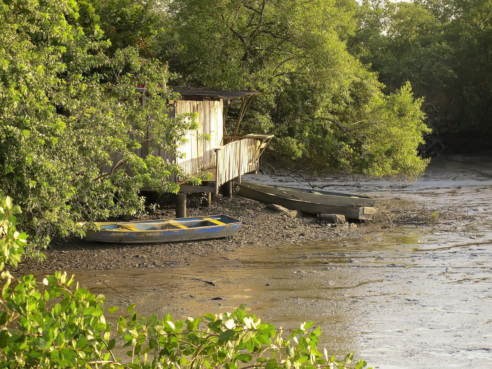

Chame
Mande uma mensagem no WhatsApp contando um pouco do que você busca. Eu respondo para combinarmos dia e horário.
Náthali Ellen Himpel, psicóloga clínica, CRP 12/27289. Terapia online por videochamada, de onde você estiver.
Sou psicóloga clínica, formada pela Univille, e atendo apenas online, por videochamada, em sessões de 50 minutos.
Acredito que a terapia é um encontro: um espaço de escuta verdadeira, sem julgamento, onde você pode ser quem é e, aos poucos, entender o que sente e encontrar outros jeitos de seguir. Moro em Joinville (SC) e atendo pessoas de qualquer cidade do Brasil.
Você pode chegar com , com , com , com um , com uma que dói ou só com vontade de .
Tudo parece urgente, o corpo fica em alerta e o descanso não chega. Na terapia, a gente entende juntos o que alimenta essa ansiedade e constrói formas mais gentis de lidar com ela.
Conversar sobre issoTemas
Acompanhe a imagem: ela se aproxima enquanto você inspira, para enquanto você segura e se afasta devagar enquanto você solta o ar. Alguns ciclos já ajudam o corpo a sair do alerta.
Pronto quando você estiver.
Mande uma mensagem no WhatsApp contando um pouco do que você busca. Eu respondo para combinarmos dia e horário.
Sessão avulsa, plano de 4 ou de 10 sessões. A forma de pagamento a gente combina direto, antes da primeira sessão.

Na hora marcada, você entra no link da videochamada. Só precisa de internet, fones de ouvido e um lugar reservado.
Cinquenta minutos só seus, com sigilo profissional, de preferência no mesmo dia e horário toda semana.
Sai por R$ 150 cada sessão, R$ 400 a menos que dez sessões avulsas. Todas online, com 50 minutos, uma por semana, por cerca de dois meses e meio.
Quero as 10 sessõesSim. O atendimento psicológico online é regulamentado pelo Conselho Federal de Psicologia. A escuta, o vínculo e o compromisso ético são os mesmos do consultório. Muda só o lugar de onde você fala.
Celular ou computador com câmera, internet estável e um lugar reservado. Fones de ouvido ajudam a manter a conversa só entre nós.
Cinquenta minutos. O mais comum é uma sessão por semana, no mesmo dia e horário, mas a frequência é combinada de acordo com o seu momento.
Fica. O sigilo é um dever previsto no Código de Ética Profissional do Psicólogo e vale igualmente para o atendimento online.
Pode. A sessão avulsa é um bom jeito de nos conhecermos. Se fizer sentido continuar, você escolhe depois o plano de 4 ou de 10 sessões.
A forma de pagamento é combinada pelo WhatsApp antes da primeira sessão, tanto para a sessão avulsa quanto para os planos.
Existe. Se o valor não cabe agora, me conte e a gente encontra juntos um valor possível.
As duas abrem uma conversa com a Náthali no WhatsApp.